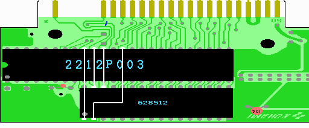
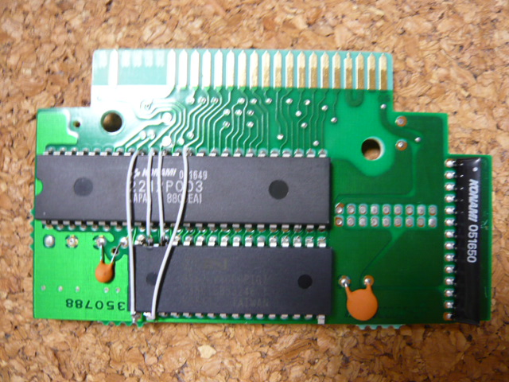

８．表面の配線
ここでは主に基板表側での配線を行います。回路図で茶色でかかれた部分です。

1. 2212P003の40ピン(MA18)とSRAMの1ピン(A18)をつなげます。
2. 2212P003の39ピン(MA17)とSRAMの31ピン(A15)をつなげます。
3. 2212P003の38ピン(MA16)とSRAMの30ピン(A17)をつなげます。
4. 2212P003の36ピン(MA14)とSRAMの2ピン(A16)をつなげます。
ここで同じ番号の信号同士をつなげていないことに不安を覚える方がいるかも知れません。ここでは工作を簡単にするために一部のアドレス線を入れ替えています。アドレス線を入れ替えても、書き込んだ所から読み込まれるため問題ありません。
大体こんな感じで。

 次へ
次へ